Introduction
Quickly after I made the arduino rc car, I wanted to experiment with another communication
method instead of radio signals using the nRF24l01 module. That’s why I decided to learn more
about Bluetooth. I already watched and read some tutorials, but they were never completed.
Here I will explain to you all the electronics and programming (esp32 and MIT app inventor)
steps to make your own Bluetooth controlled tank using your smartphone. The first step will
be to make our own App using the free MIT app Inventor website and then to code our esp32 using
the Arduino IDE.
Goals
Well, in this project our goal will be to control two motors on an esp32 using our smartphone.
Like you can see in the next photo, the interface of my app will be very simple. We will control
the direction of our tank by clicking on the buttons underneed and we will change our moving
speed using the slider in the middle of the screen. Of course this project is not finished,
we will add some leds and other controls later but today we will learn the basics of our tank.
Interested? Well let’s start!
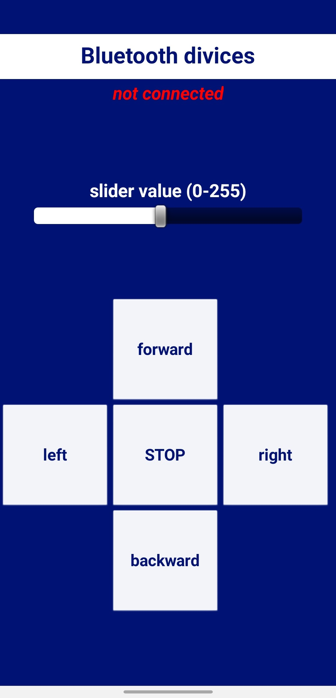

Electronic part
The electronic part is really easy. I will use 2 9V DC motors that I will control using an l293d
motor shield. The four pins that I will use to control the rotation of the motor are the 33, 25,
27 and 26 on my esp32-WROOM-32 model. The two pins that are responsible for the speed of the motors
(PWM) are pin 12 and pin 14. Here is a picture and a schema :
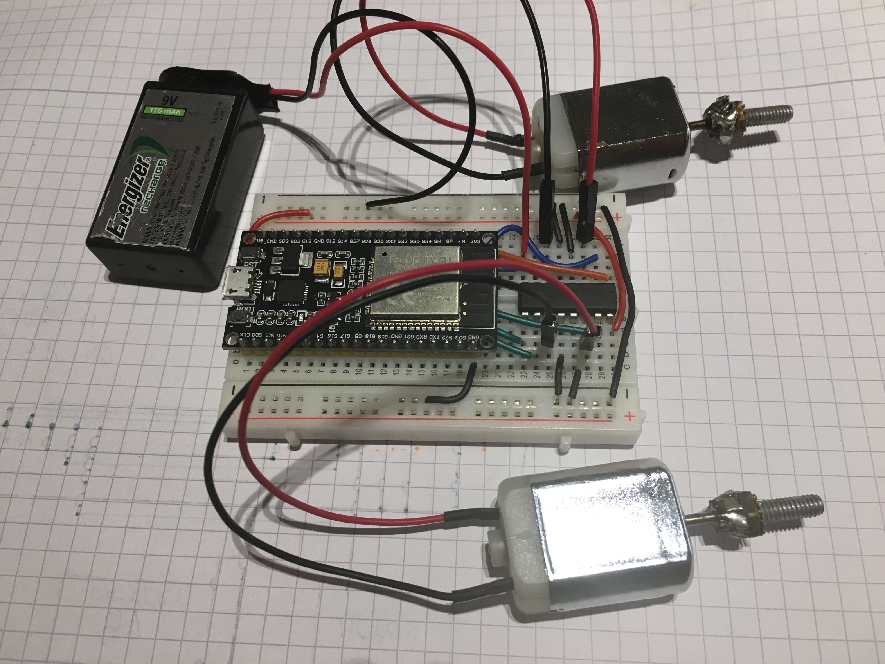
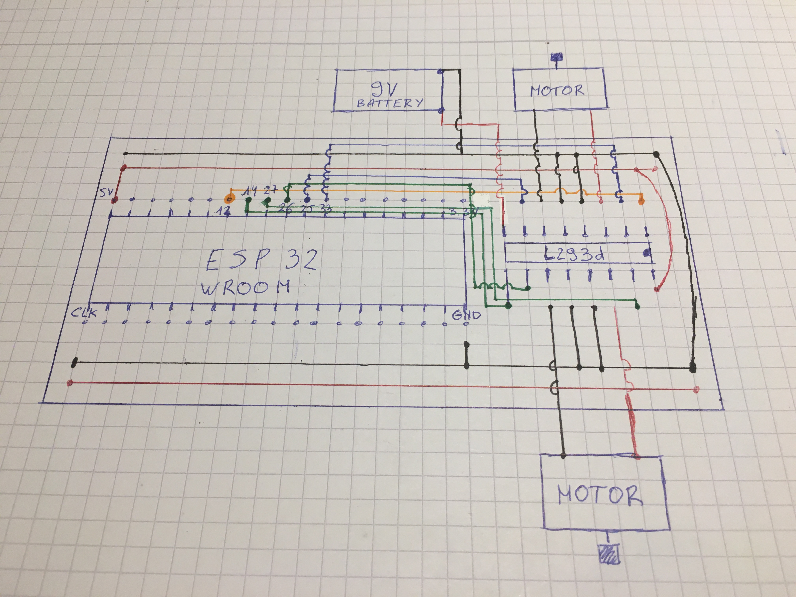
MIT App Inventor
The mit app inventor is a very good website to make your own little apps on mobile (IOS and Android (for Bluetooth only Android!!!)).
Certainly if it is a temporary app where you don’t want to spend days making it. To make it, you will
firstly have to go to the official website of the MIT app inventor. Here is the link :
https://appinventor.mit.edu/. Then you can click on the button
“create app” to build an app. After you make an account you will come to a page where you can build your app.
Here you can click on the button “start new project” on the top left corner. Name it, and now you will come to a page like that one :
The first step is to make the layout of our app, we will make the interactions later. The system is
pretty simple because you just have to drag and drop what you want on the screen. Take some time to
discover all the different palettes with their components. For our tutorial, we will use only a few
components. In the “user interface” palette we will only use a button, label, listpicker and a slider.
In the layout palette, we will only use the horizontal and table arrangement. These will make our app
nice looking. In the sensor palette, we will use the clock component and in the connectivity palette,
we will use the Bluetooth Client component. Our clock component will start a function every time interval
(default every second but you can change it in the properties). The BluetoothClient component will make
our Bluetooth connection possible. Don’t panic if you don’t see the elements on the screen, these will
never appear. Now you can just drag and drop the elements on the screen. They will also appear in the
component palette. Here is an overview of how I made my app.
Don’t forget to change the properties of each component. To make a component taking all the width of
the screen, you will have to set the width to “match parents”. Now it will take the full space of the
parent element (see component palette). Don’t forget to simplify all your widgets by renaming it. If
all the components are added, you can now click on connect (top left) and then Al companion. Here will
popup a new window asking to scan a QR code. You will have to scan it by firstly downloading the MIT
app inventor in the App and Play store. Open the app on your smartphone and scan the QR code. Now you
can properly see the layout on your screen. If you are happy with your layout, we can now start with
the logic part of the app. Click on the “block” button top right of the screen. Now you should see this
on your screen.
Take some time to discover all the different block-codes by clicking on an element of the blocks palette.
Now let’s make our app! The first step will be to control the ListPicker. There are two control blocks we will use for it. These are called .BeforePicking and .AfterPicking. Inside we will set the BluetoothList.elements to the addresses and names of our BluetoothClient1 (you can find this instruction inside the BluetoothClient1 block). That’s all for the .BeforePicking. For the .AfterPicking you will have to add a if-then control block which will only show the addresses and names of our BluetoothClient1 if our smartphone is well-connected to the esp32. Therefore we use the “call BluetoothClient1.Connectaddress” function and by adding the Bluetooth.Selection to our block.
Let’s now take a look at the Clock1 block. This is a function that will be called every 1000 milliseconds
or every 1 seconds. The main function of it is to see if we are still connected to the esp32 and if
we can clearly send data or not. So we have two if-then blocks, inside of it we first check if we are
connected. If True then we can set our connection_label to “connected” with a green color. Otherwise we
will set the text “not connected” with a red textcolor.
When our slider will change his position, then we will set our label1.text to the slider.thumb position.
Don’t forget to round this value using the round math-block. Otherwise you will get some troubles when
sending the data to our esp32.
Finally we will interact with our buttons! There are 5 buttons, all of them are programmed using the
same blocks. When we click on one of the five buttons, we will first call our BluetoothClient and send
him a 1 byte number. (1byte = [1][0][1][0][1][0][1][0]) There are 8 bits inside of a byte that’s why
we can have only 256 values. (256 = 2^8) That’s more than enough for our tutorial. Using a 1byte number
is also good because it’s light-weight and it can easily be sended inside a Bluetooth connection. Now
we have to choose the right number to send. I don’t want to send a unit, I firstly want to send a letter
to make clear to the esp32 which button I just pressed. The value of our slider will be sent just after
so that the esp32 can know the PWM value to action the motors.
That’s why I will send the letters in ascii-values. That means that: forward(F) = 70,
backward(B) = 66, left(L) = 76, right(R) = 82 and stop(S) = 83. Once we have sent our letter,
we will send our value of our slider (10-255). This value will be used as PWM value for our motor.
Therefore we will send that value as a text. But before we send the Slider1.ThumbPosition we will
have to round this value using the math.round block. And that’s all for our APP.
Here you can click on the button “start new project” on the top left corner. Name it, and now you will come to a page like that one :
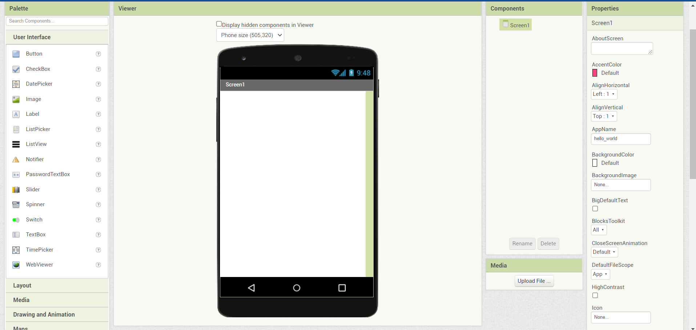
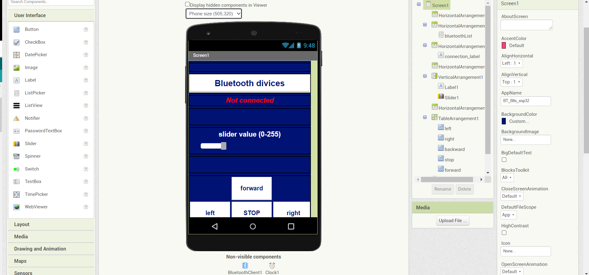
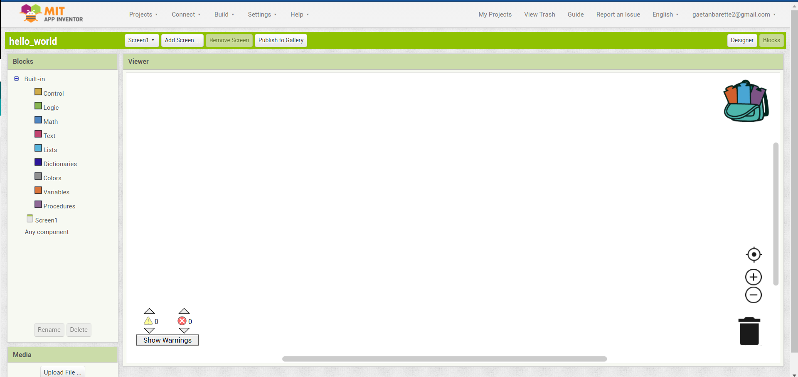
Now let’s make our app! The first step will be to control the ListPicker. There are two control blocks we will use for it. These are called .BeforePicking and .AfterPicking. Inside we will set the BluetoothList.elements to the addresses and names of our BluetoothClient1 (you can find this instruction inside the BluetoothClient1 block). That’s all for the .BeforePicking. For the .AfterPicking you will have to add a if-then control block which will only show the addresses and names of our BluetoothClient1 if our smartphone is well-connected to the esp32. Therefore we use the “call BluetoothClient1.Connectaddress” function and by adding the Bluetooth.Selection to our block.
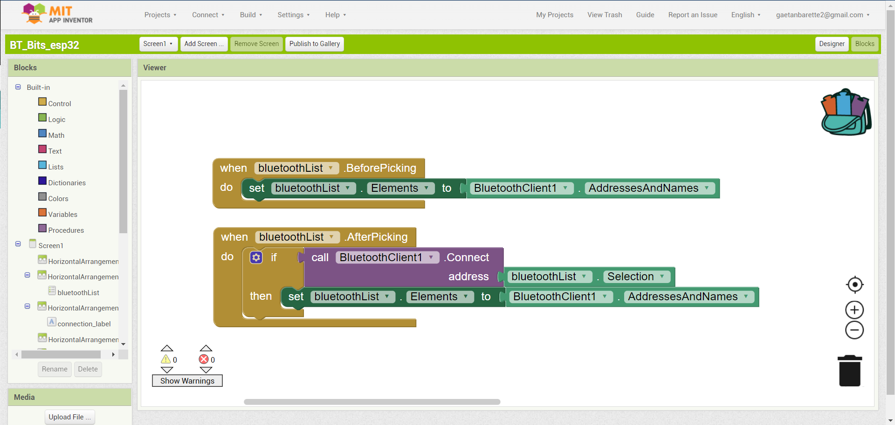
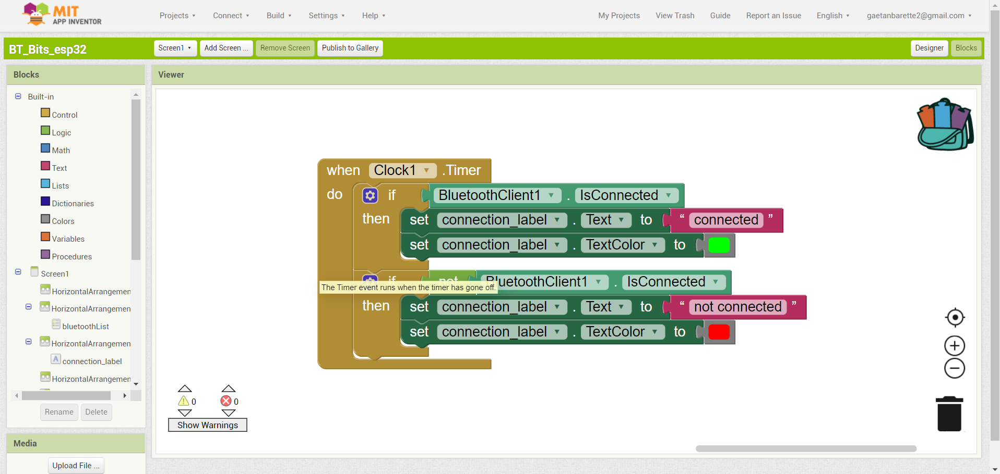
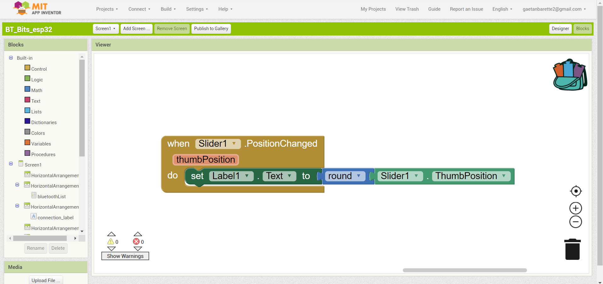
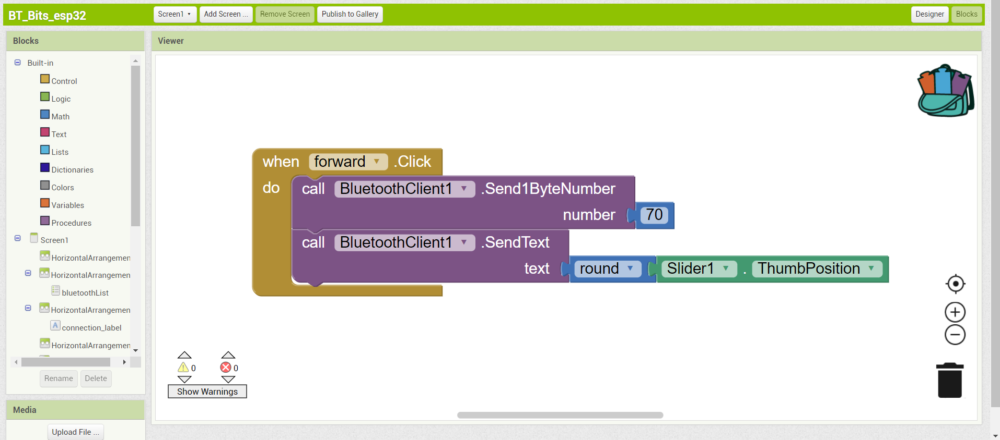
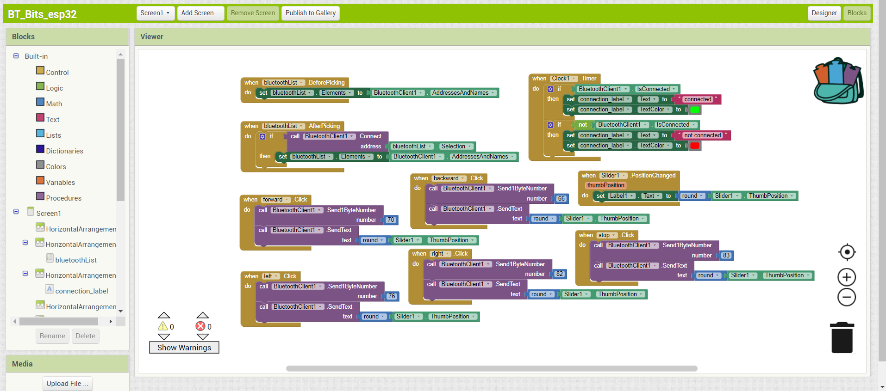
Arduino code
Now let’s see how the arduino code works.
Like I said before, our esp32 receives the first value which is a letter. Then we receive the 2
or 3 numbers that compose our pwm value each time we click on a new button on our smartphone.
There are two main problems we will have to solve. One is that we need to interact with the upcoming
data composed of a letter and a number. The other one is that our number can be composed of 2 or 3
numbers and that we need to make from these two numbers one tenfold or hundredfold number.
Now let’s see how I resolved these problems. You can find the entered code underneed. We firstly start by including our library and making an instance of it. We then declare some variables. These are all bytes because they will take less memory space inside our code. Then we declare some variables for our motor 1 and 2. These variables are needed to declare the GPIO pins and some PWM characteristics because the general analogWrite() is not working with the esp32 that’s why we will use another method which needs all these variables.
Now let’s see how I resolved these problems. You can find the entered code underneed. We firstly start by including our library and making an instance of it. We then declare some variables. These are all bytes because they will take less memory space inside our code. Then we declare some variables for our motor 1 and 2. These variables are needed to declare the GPIO pins and some PWM characteristics because the general analogWrite() is not working with the esp32 that’s why we will use another method which needs all these variables.
#include
BluetoothSerial SerialBT;
byte dataIn;
byte dataNum1;
byte dataNum2;
byte dataNum3;
byte dataSpeed;
// variables motor 1
const byte motor1base1 = 33;
const byte motor1base2 = 25;
const byte motor1spec = 14;
const byte PWM1_ch = 0;
const byte PWM1_res = 8;
const word PWM1_freq = 1000;
// variables motor 2
const byte motor2base1 = 27;
const byte motor2base2 = 26;
const byte motor2spec = 12;
const byte PWM2_ch = 0;
const byte PWM2_res = 8;
const word PWM2_freq = 1000;
In the setup section, we begin our Bluetooth serial communication by passing the name of our device
in the parameters. Then we begin our serial communication at 115200 bps and we print a little message
to say that everything is ok.
Next we declare all our GPIO as OUTPUTs and initialise our ledcAttachPin function so we can use PWM
values on our GPIO pins. See https://randomnerdtutorials.com/esp32-pwm-arduino-ide/
for more information about PWM and esp32.
void setup() {
SerialBT.begin("esp32_test");
Serial.begin(115200);
Serial.println("The divice started, now you can pair it with bluetooth...");
pinMode(motor1base1, OUTPUT);
pinMode(motor1base2, OUTPUT);
pinMode(motor2base1, OUTPUT);
pinMode(motor2base2, OUTPUT);
ledcAttachPin(motor1spec, PWM1_ch);
ledcSetup(PWM1_ch, PWM1_freq, PWM1_res);
ledcAttachPin(motor2spec, PWM2_ch);
ledcSetup(PWM2_ch, PWM2_freq, PWM2_res);
}
In the loop section we will first check if we receive something in our SerialBT communication. Yes?
Then we read the incoming data each time by printing it in the normal serial communication and by
putting a little delay of 20 milliseconds. So we will detect all the 4 that we receive each time we
press on a button. That means the first letter to know in which direction we need to ride and the 3
last values with the PWM value of the motor. Here we have a little problem. When we set our slider to
a tenfold number and not a hundredfold we only send 3 values (direction, value1, value2) but not a value3.
This is a problem because the esp32 knows he needs to detect something but actually he detects nothing.
That’s why he will invent a value that’s the “?” reversed. We don’t want to use that value. That’s why we
will check if the value is between the 0-9 value in ascii that means higher than 48 and lower than 57.
If it’s true we know that our value is a digit. otherwise it is the “?” reversed and it means that the
slider value is tenfold. Now we have to paste the 2 or 3 digits into one number. We do that using the
calculateHundred() and calculateTenths() function. Once we get our dataSpeed variable we print it again
in our Serial communication to make sure it’s working well. Now it’s pretty easy. We first check if the
first readed value (our letter) is equal to the letter F, B, L, R or S in ascii. If yes, then we activate
our 4 pins that will change the sense of rotation of our motor. Last thing is to set the dataSpeed as our
PWM value for our both motors.
void loop() {
if (SerialBT.available()) {
dataIn = SerialBT.read();
Serial.write(dataIn);
delay(20);
dataNum1 = SerialBT.read();
Serial.write(dataNum1);
delay(20);
dataNum2 = SerialBT.read();
Serial.write(dataNum2);
delay(20);
dataNum3 = SerialBT.read();
Serial.write(dataNum3);
Serial.println();
if (dataNum3 >= 48 && dataNum3 <= 57) {
calculateHundred();
} else {
calculateTenths();
}
delay(20);
}
if(dataIn == 66) { // dataIn == B (backward)
digitalWrite(motor1base1, LOW);
digitalWrite(motor1base2, HIGH);
digitalWrite(motor2base1, LOW);
digitalWrite(motor2base2, HIGH);
ledcWrite(PWM1_ch, dataSpeed);
ledcWrite(PWM2_ch, dataSpeed);
}
if(dataIn == 70) { // dataIn == F (forward)
digitalWrite(motor1base1, HIGH);
digitalWrite(motor1base2, LOW);
digitalWrite(motor2base1, HIGH);
digitalWrite(motor2base2, LOW);
ledcWrite(PWM1_ch, dataSpeed);
ledcWrite(PWM2_ch, dataSpeed);
}
if(dataIn == 83) { // dataIn == S (stop)
digitalWrite(motor1base1, LOW);
digitalWrite(motor1base2, LOW);
digitalWrite(motor2base1, LOW);
digitalWrite(motor2base2, LOW);
ledcWrite(PWM1_ch, 0);
ledcWrite(PWM2_ch, 0);
}
if(dataIn == 76) { // dataIn == L (left)
digitalWrite(motor1base1, LOW);
digitalWrite(motor1base2, HIGH);
digitalWrite(motor2base1, HIGH);
digitalWrite(motor2base2, LOW);
ledcWrite(PWM1_ch, dataSpeed);
ledcWrite(PWM2_ch, dataSpeed);
}
if(dataIn == 82) { // dataIn == R (right)
digitalWrite(motor1base1, HIGH);
digitalWrite(motor1base2, LOW);
digitalWrite(motor2base1, LOW);
digitalWrite(motor2base2, HIGH);
ledcWrite(PWM1_ch, dataSpeed);
ledcWrite(PWM2_ch, dataSpeed);
}
}
void calculateHundred() {
dataSpeed = (dataNum1*100) + (dataNum2*10) + dataNum3 + 48;
Serial.println(dataSpeed);
}
void calculateTenths() {
dataSpeed = (dataNum1*10) + dataNum2 - 16;
Serial.println(dataSpeed);
}
Arduino Code
Here's the entire code :
#include
BluetoothSerial SerialBT;
byte dataIn;
byte dataNum1;
byte dataNum2;
byte dataNum3;
byte dataSpeed;
// variables motor 1
const byte motor1base1 = 33;
const byte motor1base2 = 25;
const byte motor1spec = 14;
const byte PWM1_ch = 0;
const byte PWM1_res = 8;
const word PWM1_freq = 1000;
// variables motor 2
const byte motor2base1 = 27;
const byte motor2base2 = 26;
const byte motor2spec = 12;
const byte PWM2_ch = 0;
const byte PWM2_res = 8;
const word PWM2_freq = 1000;
void setup() {
SerialBT.begin("esp32_test");
Serial.begin(115200);
Serial.println("The divice started, now you can pair it with bluetooth...");
pinMode(motor1base1, OUTPUT);
pinMode(motor1base2, OUTPUT);
pinMode(motor2base1, OUTPUT);
pinMode(motor2base2, OUTPUT);
ledcAttachPin(motor1spec, PWM1_ch);
ledcSetup(PWM1_ch, PWM1_freq, PWM1_res);
ledcAttachPin(motor2spec, PWM2_ch);
ledcSetup(PWM2_ch, PWM2_freq, PWM2_res);
}
void loop() {
if (SerialBT.available()) {
dataIn = SerialBT.read();
Serial.write(dataIn);
delay(20);
dataNum1 = SerialBT.read();
Serial.write(dataNum1);
delay(20);
dataNum2 = SerialBT.read();
Serial.write(dataNum2);
delay(20);
dataNum3 = SerialBT.read();
Serial.write(dataNum3);
Serial.println();
if (dataNum3 >= 48 && dataNum3 <= 57) {
calculateHundred();
} else {
calculateTenths();
}
delay(20);
}
if(dataIn == 66) { // dataIn == B (backward)
digitalWrite(motor1base1, LOW);
digitalWrite(motor1base2, HIGH);
digitalWrite(motor2base1, LOW);
digitalWrite(motor2base2, HIGH);
ledcWrite(PWM1_ch, dataSpeed);
ledcWrite(PWM2_ch, dataSpeed);
}
if(dataIn == 70) { // dataIn == F (forward)
digitalWrite(motor1base1, HIGH);
digitalWrite(motor1base2, LOW);
digitalWrite(motor2base1, HIGH);
digitalWrite(motor2base2, LOW);
ledcWrite(PWM1_ch, dataSpeed);
ledcWrite(PWM2_ch, dataSpeed);
}
if(dataIn == 83) { // dataIn == S (stop)
digitalWrite(motor1base1, LOW);
digitalWrite(motor1base2, LOW);
digitalWrite(motor2base1, LOW);
digitalWrite(motor2base2, LOW);
ledcWrite(PWM1_ch, 0);
ledcWrite(PWM2_ch, 0);
}
if(dataIn == 76) { // dataIn == L (left)
digitalWrite(motor1base1, LOW);
digitalWrite(motor1base2, HIGH);
digitalWrite(motor2base1, HIGH);
digitalWrite(motor2base2, LOW);
ledcWrite(PWM1_ch, dataSpeed);
ledcWrite(PWM2_ch, dataSpeed);
}
if(dataIn == 82) { // dataIn == R (right)
digitalWrite(motor1base1, HIGH);
digitalWrite(motor1base2, LOW);
digitalWrite(motor2base1, LOW);
digitalWrite(motor2base2, HIGH);
ledcWrite(PWM1_ch, dataSpeed);
ledcWrite(PWM2_ch, dataSpeed);
}
}
void calculateHundred() {
dataSpeed = (dataNum1*100) + (dataNum2*10) + dataNum3 + 48;
Serial.println(dataSpeed);
}
void calculateTenths() {
dataSpeed = (dataNum1*10) + dataNum2 - 16;
Serial.println(dataSpeed);
}
Conclusion
Voila, now you know how I made it, hope you enjoyed it, don't hesitate to watch my other
projects… Thanks.